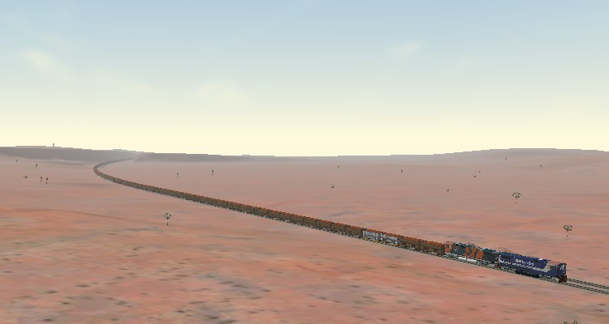
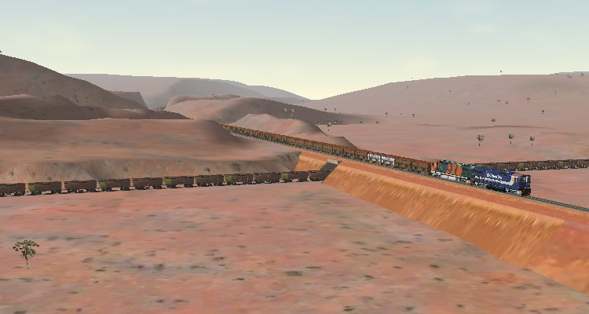
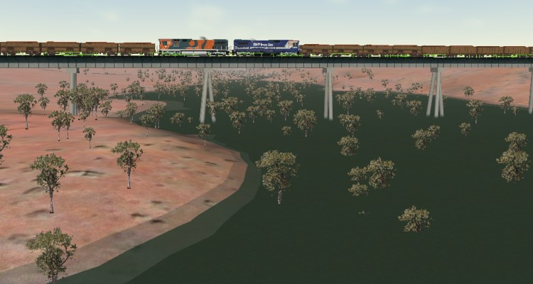
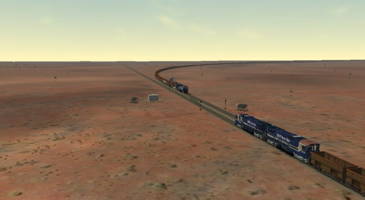
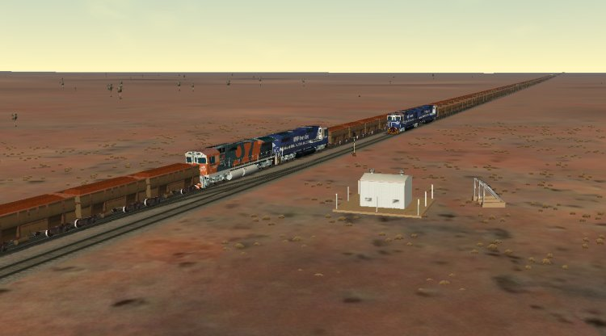

Western Australia - BHP Billiton - Mining Area C to Port Hedland
File download names and links
Complete Install of v1.0:
Note there are two files:
| AU_WA_BHP_Pilbara_MSTS1_v1_Setup.exe | |
| AU_WA_BHP_Pilbara_MSTS1_v1_Setup.D01 |
Note #1: This method of installer preparation reduces the time Vista and some anti-virus programs may take to scan the EXE file.
Note #2: you may need to right-click and "Save Link/Target As" on the .D0x files to save them to your hard disk instead of having them open in your browser.
Note #3: read "Additional Files Required" further down this page: you will require more files.
File Sizes
Setup.exe 1.64 MB (1,728,194 bytes) Setup.D01 81.7 MB (85,707,759 bytes) Hard Disk Space Required: ~175MB after completion of installation ~345MB after "creating terrain buffers"
Tasks Required
- Download the EXE file and the single .D01 file.
- Ensure that the EXE file and the .D01 data file are in the same folder in your PC. The filename prefixes (AU_WA_BHP_Pilbara_MSTS1_v1_Setup) should match exactly.
- Run the installer by double-clicking on the EXE file (do not touch the data file - .D01 - the installer EXE will load the data pack itself). The installer is automatically set to "Run As Administrator" for Vista and Windows 7 users. Do note that an "invalid data message" indicates that there is something wrong with the download: check filenames and exact file sizes. (Note: if the installer has stopped at ashphaltplat10mend.s, you have either not downloaded the .D01 file, your system (usually Internet Explorer) has renamed the file, or it is not in the same folder as the .EXE file.)
- You must have all six default routes installed BEFORE running this installer. The routes just need to be present: they DO NOT need to be unstored if you use Trainstore, nor do you need to activate them if you use Route Riter's ON/OFF utility.
- You must have Xtracks 3.20 or higher and Newroads 4.00 or higher installed. Ninety-five percent of "route operation errors" support emails I receive are the result of out-of-date Xtracks or Newroads.
- Allow the batch file to run to completion. If you do not see this batch file run in a DOS box, you most likely are a Vista or Windows 7 user. TURN OFF "User Account Control" (Start | Control Panel | User Accounts | Turn User Account Control On or Off); then right-click on the installme.bat file in the Route folder and set "Run As Administrator". The batch file should now run correctly.
- You should also download and install the BHPBIO Dash 8 Locomotives and Ore Wagons as these are required for the activities enclosed with the route.
- The first time you run this route, there will be a delay as MSTS "generates terrain buffers" - this is a one-off and subsequent use of this route will load normally.
Screenshots

Enormous trains and desolate remote landscapes characterise this route

Port Hedland-bound, the BHP-Billiton train crosses the Hammersley Iron Yandicoogina - Dampier railway line

Mid-train helpers cross Marillana Creek

An iron ore train loaded at Yandi 1 approaches an empty ore train waiting at Yandi Junction

Mid-train helpers on a Port Hedland-bound train cross an empty ore train waiting at Yandi Junction
Download a map of the Pilbara Railways from GeoProject Solutions Home Page.